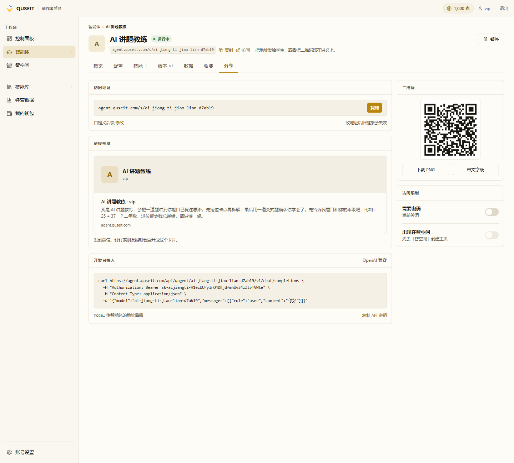
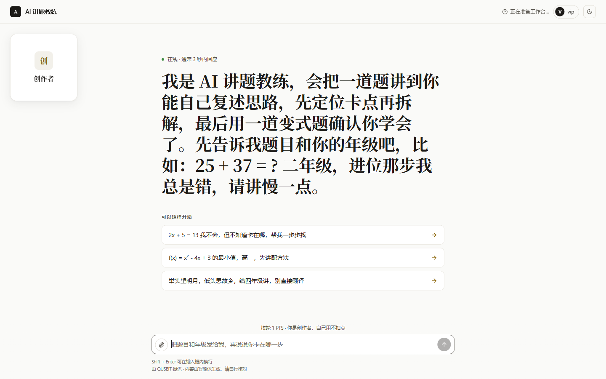
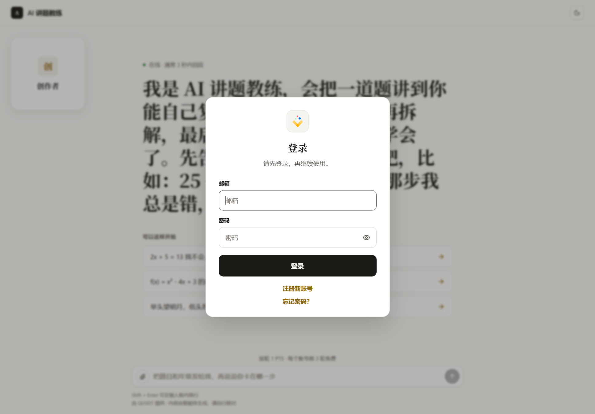

拿到第一个链接与二维码
PATH 01 第 3 课。本课介绍「分享」tab 的功能分区、访问链接与二维码的获取及替换规则,并说明开发者接入与访问限制开关。
「分享」tab 全貌
在智能体详情页顶部选择「分享」tab。该页包含 5 个区块,对应 5 类对外动作。

关键事实「分享」tab 是 7 个 tab 中唯一「保存即生效」的 — 访问地址、二维码、API 密钥、密码开关等字段的修改均无需触发「更新版本」。
获取访问链接
「访问地址」区块显示完整 URL,格式为 agent.quseit.com/s/<后缀>。点击「复制」即可获得。
系统默认生成的后缀通常为机器编码字符串,不便于记忆。可点击「修改」自行设置,约束如下:由小写字母、数字与连字符组成,首字符须为字母或数字,长度 2–50 位;已被占用的后缀将被实时拒绝。
修改地址后,旧链接与既有二维码同时失效:讲义上印发的旧二维码扫描后将跳转至 404。建议在修改前确认无遗留引用,或在新旧地址间设置过渡期。
链接预览卡
「链接预览」区块呈现该链接在微信、钉钉或朋友圈中被聊天软件抓取并展开后的样式。预览内容由智能体配置决定:
- 头像:用户上传,或由系统按名称首字生成
- 名称:即「智能体名称」字段
- 作者:创作者账号名
- 描述文案:从「角色设定」与「开场白」中抽取的核心句
预览内容随配置变更实时刷新。已发出的旧链接,其预览卡已被聊天软件缓存,不会自动更新。
获取二维码
「分享」tab 右侧的二维码与访问链接在内容上完全等价,只是呈现形式不同。
- 下载 PNG:导出标准二维码图,可直接嵌入讲义、PPT 与文档。
- 带文字版:在二维码旁附带标题与简介,适用于海报等大尺寸版面。
二维码失效场景:与访问地址一致 — 修改地址后,既有二维码同时失效。智能体名称、头像、开场白等字段的变更不影响二维码内容,因为二维码仅编码 URL。
以访客视角自测
获取链接后,建议先以访客身份访问一次,以确认冷启动页与引导问题呈现符合预期。

对于未登录或使用其他账号的访客,系统将首先展示登录弹窗,登录完成后才进入冷启动页:

登录态与匿名访客的差异:以创作者账号访问时,页面顶部会显示「vip」、底部显示「你是创作者,自己用不扣点」。无登录或使用其他账号的访客不会显示这两项内容。要观察匿名访客视角,应使用隐身窗口或另一账号打开链接。
访问限制
页面右下角的两个开关分别控制访问条件与智空间可见性:
- 需要密码才能访问:开启后,访客须先输入不少于 4 位的密码方可进入对话页。适用于内测期、对特定班级或客户群体开放的场景。密码错误时返回 HTTP 403
passwordInvalid,不触发登录刷新。 - 出现在智空间:开启后,智能体 ID 将被加入智空间主页的智能体列表。若智空间主页尚未创建,该开关将处于禁用(disabled)状态,无法勾选。
开发者接入
页面左下「开发者接入」区块提供 OpenAI 兼容的 curl 示例,供程序化调用使用:
curl https://agent.quseit.com/api/qagent/<后缀>/v1/chat/completions \
-H "Authorization: Bearer " \
-H "Content-Type: application/json" \
-d '{"model":"<后缀>","messages":[{"role":"user","content":"你好"}]}' - model 字段应填入智能体的地址后缀,而非底层模型名称 — 此处的「model」指代该智能体本身。
- 端点遵循 OpenAI Chat Completions 规范,兼容官方 SDK、LangChain、LlamaIndex 等通用客户端。
- API 密钥以
sk-为前缀,通过点击「复制 API 密钥」获得;密钥本身即调用凭据,不应外发或在公开渠道留存。
API 密钥 ≠ 用户登录态:持有密钥者均可调用本智能体,系统不区分调用者身份。若需按用户计费或限定访问,应使用前端嵌入并由用户登录,而非分发 API 密钥。
常见踩坑
- 修改地址后未重新下载二维码:讲义上印发的旧二维码扫描后将跳转 404。
- 在群聊中泄露 API 密钥:密钥以
sk-为前缀,任何持有者均可调用本智能体。目前未提供密钥轮换入口 — 若需作废,只能修改地址后缀。 - 勾选「出现在智空间」时智空间未创建:开关将处于禁用状态,需先完成智空间创建。
- 对方访问链接时返回 404:可能原因包括「地址已被修改」与「对方网络环境无法解析
agent.quseit.com」。